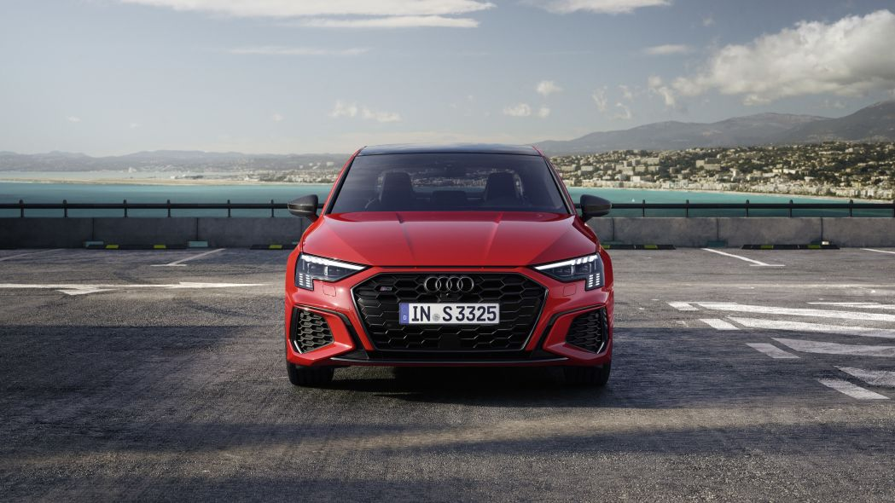

Audi S3
Posted By: Admin On February 30th, 2020.

Audi continued its model offensive by introducing the European-spec version of the next-generation S3. Unveiled online, it offers more power than its predecessor, a sharper-looking design, and better in-car technology.
Again offered as a hatchback named Sportback and as a sedan, the S3 is powered by a 2.0-liter four-cylinder turbocharged to 310 horsepower and 295 pound-feet of torque. For context, the outgoing model's 2.0-liter engine posted figures of 288 and 280, respectively. The turbo four spins the four wheels via a seven-speed automatic transmission called S-Tronic in Audi-speak and the company's time-tested Quattro all-wheel drive system. Audi pegs the S3's zero-to-62-mph time at 4.8 seconds, and its top speed is electronically limited to 155 mph. Its mission isn't merely to go quickly in a straight line, however. It also gains a model-specific suspension that's about half an inch lower than the A3's, speed-sensitive steering, and upgraded brakes. The company explained its engineers increased the spread between comfort and performance to make the S3 a better all-arounder.
While engineers were fine-tuning the chassis, stylists were busy giving the S3 a look that clearly stands out from the fourth-generation A3 it's based on. Viewed from the front, it receives a blacked-out grille, bigger air intakes chiseled into the bumper, and three thin vents positioned right below the hood that create a visual link between the S3 and the Sport Quattro that dominated the international rally scene during the 1980s. Out back, both body styles wear a more aggressive-looking spoiler, and a relatively subtle air diffuser flanked by four oval exhaust tips. 18-inch wheels come standard, at least on the European market, and 19-inch alloys are offered at an extra cost.